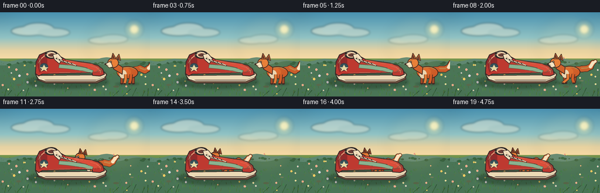
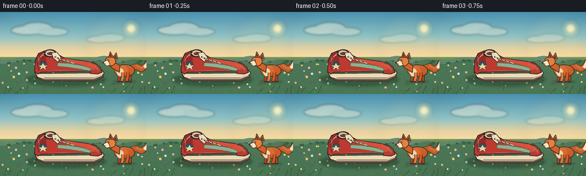
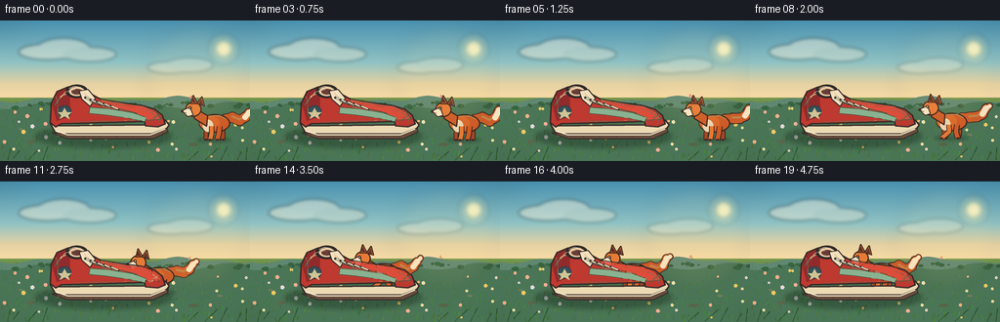
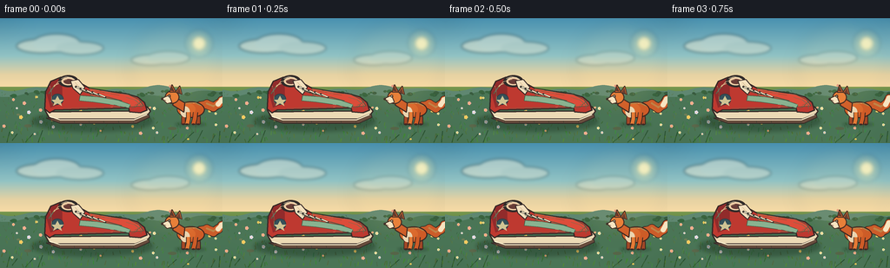
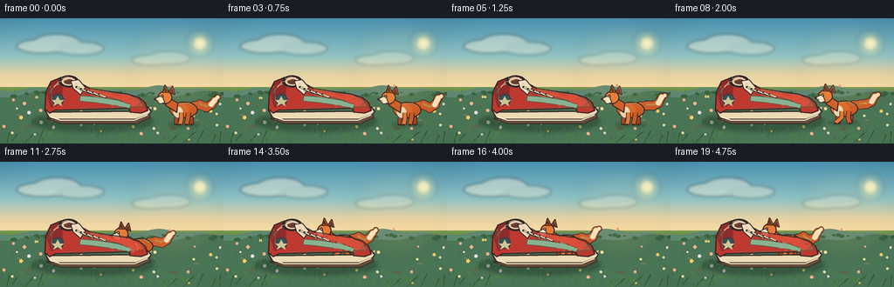
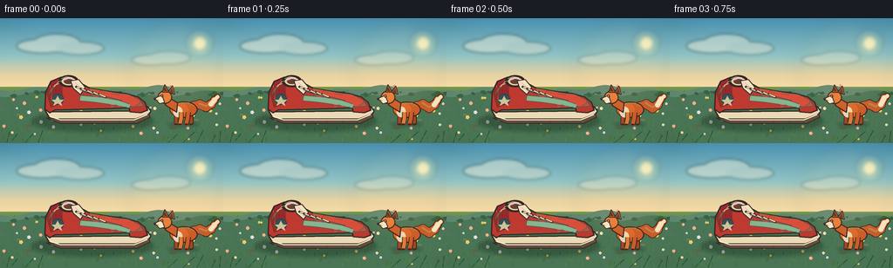

CODING AGENTS AS PIXEL WORLD MODELS
traex/DeepSeek-V4.1-Flash · dynamic_spatial_relationship_0031
点击播放 · 原生 RGB 像素
逐轮保存的候选
回放视频、检查图与代码变化。
每份候选均可单独播放。实际图片检查记录在下方工具轨迹中。
候选 01播放与检查图
点击播放 · 原生 RGB 像素


展开代码变化
--- 上一保存版本
+++ 本次保存版本
@@ -0,0 +1,601 @@
+from pathlib import Path
+import math
+import random
+
+import numpy as np
+from PIL import Image, ImageDraw, ImageFilter
+
+import artifact_io
+
+
+CASE_DIR = Path(__file__).resolve().parent
+W, H = 256, 144
+SS = 4
+FPS = 4
+FRAME_COUNT = 20
+
+
+def px(value):
+ return int(round(value * SS))
+
+
+def point(p):
+ return (px(p[0]), px(p[1]))
+
+
+def box(values):
+ return tuple(px(v) for v in values)
+
+
+def poly(draw, points, fill, outline=None, width=0):
+ pts = [point(p) for p in points]
+ draw.polygon(pts, fill=fill)
+ if outline is not None and width:
+ draw.line(pts + [pts[0]], fill=outline, width=px(width), joint="curve")
+
+
+def line(draw, points, fill, width=1.0, joint="curve"):
+ draw.line([point(p) for p in points], fill=fill, width=max(1, px(width)), joint=joint)
+
+
+def ellipse(draw, bounds, fill=None, outline=None, width=0):
+ draw.ellipse(box(bounds), fill=fill, outline=outline, width=max(0, px(width)))
+
+
+def lerp(a, b, t):
+ return a + (b - a) * t
+
+
+def smoothstep(t):
+ t = max(0.0, min(1.0, t))
+ return t * t * (3.0 - 2.0 * t)
+
+
+def vertical_gradient(height, stops):
+ ys = np.linspace(0.0, 1.0, height)
+ positions = np.array([s[0] for s in stops], dtype=np.float32)
+ colors = np.array([s[1] for s in stops], dtype=np.float32)
+ out = np.empty((height, 3), dtype=np.float32)
+ for channel in range(3):
+ out[:, channel] = np.interp(ys, positions, colors[:, channel])
+ return out
+
+
+def make_background():
+ width, height = W * SS, H * SS
+ arr = np.empty((height, width, 3), dtype=np.uint8)
+
+ horizon = int(79 * SS)
+ sky = vertical_gradient(horizon, [
+ (0.00, (73, 145, 176)),
+ (0.55, (145, 195, 196)),
+ (0.82, (229, 210, 163)),
+ (1.00, (247, 219, 166)),
+ ])
+ ground = vertical_gradient(height - horizon, [
+ (0.00, (121, 151, 79)),
+ (0.20, (90, 134, 66)),
+ (0.62, (66, 113, 58)),
+ (1.00, (38, 83, 48)),
+ ])
+ arr[:horizon] = sky[:, None, :].astype(np.uint8)
+ arr[horizon:] = ground[:, None, :].astype(np.uint8)
+ im = Image.fromarray(arr, "RGB").convert("RGBA")
+ draw = ImageDraw.Draw(im, "RGBA")
+
+ # Warm sun and a soft atmospheric halo.
+ sun_layer = Image.new("RGBA", im.size, (0, 0, 0, 0))
+ sd = ImageDraw.Draw(sun_layer, "RGBA")
+ ellipse(sd, (213, 13, 245, 45), (255, 234, 153, 28))
+ ellipse(sd, (218, 18, 240, 40), (255, 239, 171, 60))
+ ellipse(sd, (222, 22, 236, 36), (255, 247, 197, 230))
+ sun_layer = sun_layer.filter(ImageFilter.GaussianBlur(px(2.1)))
+ im = Image.alpha_composite(im, sun_layer)
+ draw = ImageDraw.Draw(im, "RGBA")
+
+ # Thin, wind-shaped clouds.
+ cloud = Image.new("RGBA", im.size, (0, 0, 0, 0))
+ cd = ImageDraw.Draw(cloud, "RGBA")
+ ellipse(cd, (19, 24, 77, 40), (247, 239, 213, 115))
+ ellipse(cd, (38, 18, 92, 39), (255, 246, 221, 105))
+ ellipse(cd, (64, 27, 119, 42), (250, 239, 213, 92))
+ ellipse(cd, (151, 42, 195, 54), (255, 245, 220, 72))
+ ellipse(cd, (169, 38, 218, 53), (255, 247, 226, 60))
+ cloud = cloud.filter(ImageFilter.GaussianBlur(px(1.7)))
+ im = Image.alpha_composite(im, cloud)
+ draw = ImageDraw.Draw(im, "RGBA")
+
+ # Distant blue-green hills.
+ far_points = [(0, 85)]
+ for x in range(0, W + 1, 4):
+ y = 80.5 + 2.2 * math.sin(x * 0.055 + 0.8) + 1.4 * math.sin(x * 0.13)
+ far_points.append((x, y))
+ far_points += [(W, 86), (W, H), (0, H)]
+ poly(draw, far_points, (95, 135, 113, 235))
+
+ mid_points = [(0, 89)]
+ for x in range(0, W + 1, 3):
+ y = 87.0 + 3.0 * math.sin(x * 0.035 + 2.0) + 1.6 * math.sin(x * 0.10 + 0.5)
+ mid_points.append((x, y))
+ mid_points += [(W, 94), (W, H), (0, H)]
+ poly(draw, mid_points, (74, 117, 86, 245))
+
+ # A loose line of shrubs gives the horizon a handmade, painterly edge.
+ shrub_rng = random.Random(17)
+ for i in range(46):
+ x = shrub_rng.uniform(0, W)
+ y = 86 + 1.8 * math.sin(x * 0.09) + shrub_rng.uniform(-1.2, 1.8)
+ r = shrub_rng.uniform(1.2, 3.7)
+ ellipse(draw, (x - r, y - r * 0.55, x + r, y + r * 0.7),
+ (51 + shrub_rng.randrange(10), 91 + shrub_rng.randrange(12), 62, 210))
+
+ # Meadow texture, kept low contrast behind the actors.
+ grass_rng = random.Random(2026)
+ for _ in range(360):
+ x = grass_rng.uniform(0, W)
+ y = grass_rng.uniform(84, H)
+ depth = (y - 84) / (H - 84)
+ length = lerp(1.2, 5.0, depth) * grass_rng.uniform(0.6, 1.2)
+ lean = grass_rng.uniform(-1.6, 1.7)
+ col = (
+ 55 + grass_rng.randrange(35),
+ 101 + grass_rng.randrange(42),
+ 48 + grass_rng.randrange(28),
+ int(lerp(75, 155, depth)),
+ )
+ line(draw, [(x, y), (x + lean, y - length)], col, width=lerp(0.45, 1.0, depth))
+
+ # Tiny flowers and clover dots.
+ flower_rng = random.Random(902)
+ flower_colors = [
+ (249, 239, 189, 225),
+ (255, 209, 104, 225),
+ (231, 224, 246, 210),
+ (243, 173, 155, 210),
+ ]
+ for _ in range(39):
+ x = flower_rng.uniform(4, W - 4)
+ y = flower_rng.uniform(91, H - 4)
+ size = flower_rng.uniform(0.65, 1.35)
+ line(draw, [(x, y + size * 1.8), (x, y)], (48, 94, 50, 155), width=0.55)
+ color = flower_rng.choice(flower_colors)
+ for angle in range(0, 360, 72):
+ a = math.radians(angle)
+ fx = x + math.cos(a) * size
+ fy = y + math.sin(a) * size
+ ellipse(draw, (fx - size * 0.7, fy - size * 0.7, fx + size * 0.7, fy + size * 0.7), color)
+ ellipse(draw, (x - 0.45, y - 0.45, x + 0.45, y + 0.45), (250, 191, 67, 235))
+
+ # A few small stones and worn patches around the foreground.
+ for x, y, rx, ry, col in [
+ (32, 124, 4.2, 1.7, (91, 105, 76, 120)),
+ (198, 127, 5.0, 1.8, (86, 101, 72, 110)),
+ (225, 117, 2.8, 1.1, (117, 127, 91, 105)),
+ (21, 111, 2.0, 0.9, (112, 127, 89, 105)),
+ ]:
+ ellipse(draw, (x - rx, y - ry, x + rx, y + ry), col)
+
+ return im
+
+
+BACKGROUND = make_background()
+
+
+def draw_soft_shadow(im, bounds, alpha=78, blur=2.2):
+ layer = Image.new("RGBA", im.size, (0, 0, 0, 0))
+ d = ImageDraw.Draw(layer, "RGBA")
+ ellipse(d, bounds, (21, 44, 29, alpha))
+ layer = layer.filter(ImageFilter.GaussianBlur(px(blur)))
+ return Image.alpha_composite(im, layer)
+
+
+def tapered_curve(draw, points, widths, fill):
+ if len(points) < 2:
+ return
+ for i in range(len(points) - 1):
+ a = points[i]
+ b = points[i + 1]
+ w = lerp(widths[i], widths[i + 1], 0.5)
+ line(draw, [a, b], fill, width=w)
+ ellipse(draw, (a[0] - w / 2, a[1] - w / 2, a[0] + w / 2, a[1] + w / 2), fill)
+ ellipse(draw, (b[0] - w / 2, b[1] - w / 2, b[0] + w / 2, b[1] + w / 2), fill)
+
+
+def fox_tail(draw, x, y, scale, wag, behind=False):
+ lift = 2.2 * math.sin(wag)
+ curl = 2.4 * math.cos(wag * 0.8)
+ local = [
+ (13.5, -26.0),
+ (23.0, -27.5 - lift * 0.5),
+ (32.0, -25.0 + lift),
+ (39.0, -29.0 + lift * 0.7),
+ (43.5, -36.0 + curl),
+ (48.0, -39.5 + curl * 0.5),
+ ]
+ pts = [(x + lx * scale, y + ly * scale) for lx, ly in local]
+ widths = [7.8, 9.5, 9.8, 8.8, 6.7, 3.4]
+ tapered_curve(draw, pts, [w + 1.7 for w in widths], (58, 37, 31, 245))
+ tapered_curve(draw, pts, widths, (205, 93, 42, 255))
+ # Warm upper highlight.
+ hi = [(px_, py_ - 1.2 * scale) for px_, py_ in pts[1:5]]
+ tapered_curve(draw, hi, [2.2, 2.1, 1.7, 1.1], (237, 137, 67, 185))
+ # Cream tail tip.
+ tip = pts[-3:]
+ tapered_curve(draw, tip, [6.5, 5.0, 2.8], (248, 229, 193, 255))
+ if behind:
+ ellipse(draw, (pts[-1][0] - 2.2 * scale, pts[-1][1] - 2.2 * scale,
+ pts[-1][0] + 2.2 * scale, pts[-1][1] + 2.2 * scale),
+ (248, 229, 193, 255))
+
+
+def draw_fox_leg(draw, x, y, scale, points, width, color, paw_color):
+ pts = [(x + lx * scale, y + ly * scale) for lx, ly in points]
+ line(draw, pts, (58, 37, 31, 245), width=width + 1.6)
+ line(draw, pts, color, width=width)
+ paw = pts[-1]
+ ellipse(draw, (paw[0] - 2.2 * scale, paw[1] - 1.1 * scale,
+ paw[0] + 2.5 * scale, paw[1] + 1.15 * scale), paw_color)
+
+
+def draw_fox(draw, x, y, scale, run_phase=0.0, running=False, wag=0.0):
+ outline = (57, 36, 31, 255)
+ orange = (208, 92, 39, 255)
+ orange_light = (231, 123, 53, 255)
+ cream = (249, 231, 198, 255)
+ sock = (62, 42, 37, 255)
+
+ swing = math.sin(run_phase) if running else 0.0
+ bob = (0.9 * math.sin(run_phase * 2.0) if running else 0.35 * math.sin(wag * 0.7))
+
+ # Tail sits behind the body.
+ fox_tail(draw, x, y + bob, scale, wag, behind=True)
+
+ # Far legs are darker and slightly thinner.
+ far = (164, 72, 39, 255)
+ if running:
+ draw_fox_leg(draw, x, y + bob, scale,
+ [(-9, -17), (-11 - 2 * swing, -7), (-13 - 7 * swing, 0)],
+ 3.5, far, sock)
+ draw_fox_leg(draw, x, y + bob, scale,
+ [(10, -17), (12 + 2 * swing, -8), (15 + 7 * swing, 0)],
+ 3.8, far, sock)
+ else:
+ draw_fox_leg(draw, x, y + bob, scale,
+ [(-9, -17), (-10, -7), (-10, 0)], 3.5, far, sock)
+ draw_fox_leg(draw, x, y + bob, scale,
+ [(10, -17), (11, -8), (11, 0)], 3.8, far, sock)
+
+ # Body and chest.
+ body = (x - 19 * scale, y - 32 * scale + bob,
+ x + 20 * scale, y - 9 * scale + bob)
+ ellipse(draw, body, orange, outline, 1.25)
+ ellipse(draw, (x - 18 * scale, y - 30 * scale + bob,
+ x + 7 * scale, y - 12 * scale + bob),
+ (221, 105, 44, 255))
+ ellipse(draw, (x - 14 * scale, y - 25 * scale + bob,
+ x - 1 * scale, y - 10 * scale + bob),
+ (244, 220, 183, 245))
+ # A soft back highlight.
+ line(draw, [(x - 12 * scale, y - 29 * scale + bob),
+ (x + 7 * scale, y - 30 * scale + bob),
+ (x + 15 * scale, y - 26 * scale + bob)],
+ (239, 143, 70, 155), width=1.4 * scale)
+
+ # Near legs.
+ if running:
+ draw_fox_leg(draw, x, y + bob, scale,
+ [(-3, -17), (-1 + 2 * swing, -8), (-5 + 8 * swing, 0)],
+ 4.0, orange_light, sock)
+ draw_fox_leg(draw, x, y + bob, scale,
+ [(7, -17), (4 - 2 * swing, -8), (1 - 8 * swing, 0)],
+ 4.3, orange, sock)
+ else:
+ draw_fox_leg(draw, x, y + bob, scale,
+ [(-3, -17), (-3, -8), (-5, 0)], 4.0, orange_light, sock)
+ draw_fox_leg(draw, x, y + bob, scale,
+ [(7, -17), (6, -8), (4, 0)], 4.3, orange, sock)
+
+ # Neck and head, facing left toward the shoe.
+ neck = [
+ (x - 8 * scale, y - 30 * scale + bob),
+ (x - 21 * scale, y - 38 * scale + bob),
+ (x - 25 * scale, y - 27 * scale + bob),
+ (x - 9 * scale, y - 17 * scale + bob),
+ ]
+ poly(draw, neck, orange, outline, 1.15)
+ head_cx = x - 25.5 * scale
+ head_cy = y - 38.0 * scale + bob
+ ellipse(draw, (head_cx - 10.5 * scale, head_cy - 9.5 * scale,
+ head_cx + 10.0 * scale, head_cy + 9.3 * scale),
+ orange_light, outline, 1.25)
+
+ # Ears: a dark rear ear and a sunlit near ear.
+ poly(draw, [(x - 29 * scale, y - 45 * scale + bob),
+ (x - 26 * scale, y - 56 * scale + bob),
+ (x - 20 * scale, y - 45 * scale + bob)],
+ orange, outline, 1.1)
+ poly(draw, [(x - 27.5 * scale, y - 47 * scale + bob),
+ (x - 26 * scale, y - 53 * scale + bob),
+ (x - 22.5 * scale, y - 46 * scale + bob)],
+ (83, 46, 39, 255))
+ poly(draw, [(x - 21 * scale, y - 45 * scale + bob),
+ (x - 15 * scale, y - 54 * scale + bob),
+ (x - 12 * scale, y - 42 * scale + bob)],
+ (224, 112, 45, 255), outline, 1.0)
+ poly(draw, [(x - 19.5 * scale, y - 45 * scale + bob),
+ (x - 15.5 * scale, y - 51 * scale + bob),
+ (x - 13.5 * scale, y - 43 * scale + bob)],
+ (99, 53, 43, 255))
+
+ # White cheek and long muzzle.
+ poly(draw, [(x - 30 * scale, y - 41 * scale + bob),
+ (x - 40 * scale, y - 36 * scale + bob),
+ (x - 33 * scale, y - 29 * scale + bob),
+ (x - 26 * scale, y - 31 * scale + bob)],
+ cream, outline, 0.9)
+ ellipse(draw, (x - 41.3 * scale, y - 37.2 * scale + bob,
+ x - 38.1 * scale, y - 34.1 * scale + bob),
+ (48, 33, 31, 255))
+ line(draw, [(x - 38.4 * scale, y - 34.7 * scale + bob),
+ (x - 34.4 * scale, y - 33.2 * scale + bob)],
+ (83, 50, 41, 220), width=0.7)
+
+ # Eye, brow, and whisker glint.
+ ellipse(draw, (x - 31.5 * scale, y - 41.2 * scale + bob,
+ x - 27.8 * scale, y - 37.8 * scale + bob),
+ (49, 34, 31, 255))
+ ellipse(draw, (x - 30.5 * scale, y - 40.2 * scale + bob,
+ x - 29.3 * scale, y - 39.0 * scale + bob),
+ (255, 243, 214, 245))
+ line(draw, [(x - 30.8 * scale, y - 42.0 * scale + bob),
+ (x - 27.0 * scale, y - 42.7 * scale + bob)],
+ (119, 56, 38, 180), width=0.55)
+ line(draw, [(x - 38.0 * scale, y - 35.4 * scale + bob),
+ (x - 43.0 * scale, y - 37.2 * scale + bob)],
+ (92, 55, 42, 95), width=0.35)
+
+
+def draw_shoe(im):
+ # Ground contact shadow first.
+ im = draw_soft_shadow(im, (45, 108, 185, 130), alpha=95, blur=2.4)
+ layer = Image.new("RGBA", im.size, (0, 0, 0, 0))
+ d = ImageDraw.Draw(layer, "RGBA")
+
+ outline = (54, 41, 39, 255)
+ sole_dark = (103, 77, 61, 255)
+ sole = (236, 218, 181, 255)
+ sole_light = (255, 241, 207, 255)
+ red = (190, 57, 48, 255)
+ red_light = (221, 77, 58, 255)
+ red_dark = (145, 43, 43, 255)
+ cream = (244, 224, 190, 255)
+ mint = (137, 178, 144, 255)
+ navy = (53, 80, 89, 255)
+
+ # Sole and tread.
+ poly(d, [(60, 105), (65, 114), (77, 119), (165, 119),
+ (176, 115), (182, 107), (178, 102), (165, 102),
+ (159, 107), (68, 108)], sole, outline, 1.45)
+ poly(d, [(62, 115), (78, 121), (166, 121), (181, 114),
+ (180, 110), (164, 116), (78, 116)], sole_dark, outline, 1.0)
+ line(d, [(66, 113), (78, 117), (163, 117), (178, 111)], sole_light, width=1.15)
+ for x in (77, 94, 111, 128, 145, 162):
+ line(d, [(x, 118.5), (x + 0.8, 121)], (82, 66, 58, 190), width=0.55)
+
+ # Main upper.
+ upper = [
+ (60.5, 104.5), (61.5, 85.0), (67.5, 72.5), (79.0, 67.8),
+ (94.5, 68.0), (102.0, 75.0), (112.0, 80.5), (134.0, 84.0),
+ (153.0, 86.5), (167.0, 90.5), (175.0, 97.0), (178.0, 106.0),
+ (170.5, 109.0), (158.0, 108.0), (157.0, 103.5), (72.0, 105.8),
+ (66.0, 109.0),
+ ]
+ poly(d, upper, red, outline, 1.55)
+
+ # Heel and toe tonal panels.
+ poly(d, [(62, 85), (68, 73), (80, 69), (81, 98), (67, 103)],
+ red_dark, None)
+ poly(d, [(112, 81), (136, 85), (157, 88), (169, 94), (174, 101),
+ (159, 102), (155, 98), (132, 94), (113, 89)],
+ red_light, (128, 44, 40, 125), 0.65)
+ line(d, [(65, 87), (72, 77), (82, 73)], (242, 125, 85, 120), width=1.1)
+
+ # Collar opening and padded lining.
+ ellipse(d, (76, 65.5, 99, 79.5), (43, 42, 42, 255), outline, 1.1)
+ ellipse(d, (79.5, 68.0, 95.5, 77.2), (240, 207, 167, 255))
+ ellipse(d, (82.0, 70.0, 93.5, 75.8), (104, 61, 55, 255))
+ line(d, [(79.5, 69.4), (85.0, 67.2), (91.0, 68.2), (95.0, 70.5)],
+ (255, 235, 203, 210), width=0.7)
+
+ # Tongue.
+ poly(d, [(90, 72.0), (99, 70.4), (106.5, 79.5), (101.0, 88.0), (93.0, 81.0)],
+ cream, outline, 1.05)
+ line(d, [(95, 73.8), (99.5, 78.8), (101.2, 84.0)], (174, 133, 103, 120), width=0.55)
+
+ # Mint side stripe and navy heel badge.
+ poly(d, [(101, 89), (121, 90.5), (145, 94.5), (159, 99.5),
+ (157, 103.5), (141, 100.0), (116, 96.5), (100, 95.0)],
+ mint, (64, 102, 76, 180), 0.7)
+ ellipse(d, (68.0, 87.0, 82.0, 99.5), navy, (42, 61, 68, 255), 0.75)
+ poly(d, [(75, 89.5), (77.6, 94.0), (82.2, 94.0), (78.7, 97.0),
+ (80.0, 101.0), (75.0, 98.0), (70.0, 101.0), (71.5, 97.0),
+ (68.0, 94.0), (72.6, 94.0)], (239, 219, 166, 240), None)
+
+ # Laces, eyelets, and vamp seam.
+ line(d, [(96, 77.5), (105, 84.5), (118, 88.2), (134, 91.0), (149, 95.0)],
+ (111, 71, 63, 190), width=1.0)
+ lace_rows = [
+ ((96.0, 79.0), (104.5, 82.0)),
+ ((101.5, 80.8), (110.0, 85.0)),
+ ((108.0, 83.0), (116.5, 87.0)),
+ ((115.0, 85.0), (123.5, 89.0)),
+ ((122.0, 87.2), (130.5, 91.0)),
+ ]
+ for i, (a, b) in enumerate(lace_rows):
+ line(d, [a, b], (48, 41, 40, 235), width=2.0)
+ line(d, [(a[0] + 0.4, a[1] + 0.25), (b[0] - 0.2, b[1] - 0.15)],
+ (250, 235, 202, 255), width=1.15)
+ ellipse(d, (a[0] - 0.9, a[1] - 0.9, a[0] + 0.9, a[1] + 0.9),
+ (57, 55, 51, 255))
+ ellipse(d, (b[0] - 0.8, b[1] - 0.8, b[0] + 0.8, b[1] + 0.8),
+ (57, 55, 51, 255))
+
+ # Stitching and toe scuff marks.
+ stitch = (255, 214, 174, 135)
+ for pts in [
+ [(66, 78), (68, 85), (68, 96), (70, 101)],
+ [(154, 91), (164, 94), (171, 100), (171, 104)],
+ [(83, 104), (101, 103), (120, 103), (140, 102), (154, 102)],
+ ]:
+ line(d, pts, stitch, width=0.55)
+ line(d, [(164, 100), (169, 98), (172, 95)], (108, 44, 40, 95), width=0.5)
+ line(d, [(160, 104), (165, 102), (168, 99)], (108, 44, 40, 80), width=0.45)
+
+ # Small crisp highlights.
+ line(d, [(71, 79), (76, 73), (86, 70.5)], (255, 164, 116, 150), width=0.85)
+ line(d, [(115, 83), (131, 86), (146, 88.5)], (255, 164, 122, 95), width=0.55)
+ im = Image.alpha_composite(im, layer)
+ return im
+
+
+def draw_dust(im, x, y, amount, phase):
+ layer = Image.new("RGBA", im.size, (0, 0, 0, 0))
+ d = ImageDraw.Draw(layer, "RGBA")
+ for j in range(amount):
+ spread = (j - (amount - 1) / 2)
+ dx = spread * 5.0 + 3.0 * math.sin(phase + j)
+ dy = -1.5 * abs(spread) - (j % 2) * 2.0
+ r = 1.0 + 0.6 * (j % 3)
+ ellipse(d, (x + dx - r, y + dy - r * 0.55, x + dx + r, y + dy + r * 0.55),
+ (214, 194, 143, 70))
+ layer = layer.filter(ImageFilter.GaussianBlur(px(0.8)))
+ return Image.alpha_composite(im, layer)
+
+
+def draw_butterfly(im, x, y, wing_phase, color=(247, 206, 91, 230)):
+ layer = Image.new("RGBA", im.size, (0, 0, 0, 0))
+ d = ImageDraw.Draw(layer, "RGBA")
+ spread = 1.6 + 1.2 * abs(math.sin(wing_phase))
+ line(d, [(x, y), (x + 0.4, y + 2.2)], (63, 54, 42, 180), width=0.45)
+ ellipse(d, (x - spread, y - 1.8, x, y + 1.2), color)
+ ellipse(d, (x + 0.2, y - 1.5, x + spread, y + 1.1), (250, 224, 133, 215))
+ return Image.alpha_composite(im, layer)
+
+
+def draw_foreground(im, frame_index):
+ layer = Image.new("RGBA", im.size, (0, 0, 0, 0))
+ d = ImageDraw.Draw(layer, "RGBA")
+ sway = 0.6 * math.sin(frame_index * 0.45)
+ blades = [
+ (8, 143, 3, 12), (14, 141, 6, 8), (29, 143, 9, 10),
+ (44, 143, 5, 14), (193, 143, 10, 9), (210, 143, 13, 12),
+ (226, 143, 7, 14), (243, 143, 5, 10), (252, 143, 1, 13),
+ ]
+ for x, y, lean, height in blades:
+ line(d, [(x, y), (x + lean + sway, y - height)],
+ (38, 78, 44, 235), width=0.9)
+ line(d, [(x + 0.8, y), (x + lean * 0.55 + sway, y - height * 0.58)],
+ (68, 111, 56, 200), width=0.55)
+ # A few clover leaves at the bottom corners.
+ for cx, cy in [(5, 137), (235, 138), (247, 134)]:
+ ellipse(d, (cx - 2.0, cy - 1.2, cx, cy + 0.7), (63, 112, 60, 205))
+ ellipse(d, (cx, cy - 1.2, cx + 2.0, cy + 0.7), (74, 126, 68, 205))
+ return Image.alpha_composite(im, layer)
+
+
+def fox_motion(frame_index):
+ if frame_index <= 5:
+ return {
+ "x": 217.0,
+ "y": 122.0,
+ "scale": 0.94,
+ "running": False,
+ "run_phase": 0.0,
+ "wag": 0.4 + frame_index * 0.72,
+ "dust": 0,
+ }
+ if frame_index <= 14:
+ t = smoothstep((frame_index - 6) / 8.0)
+ return {
+ "x": lerp(217.0, 132.0, t),
+ "y": lerp(122.0, 112.0, t),
+ "scale": lerp(0.94, 0.82, t),
+ "running": True,
+ "run_phase": (frame_index - 6) * 2.15,
+ "wag": 1.5 + frame_index * 0.42,
+ "dust": min(5, 1 + (frame_index - 6) // 2),
+ }
+ t = smoothstep((frame_index - 15) / 4.0)
+ return {
+ "x": lerp(132.0, 128.0, t),
+ "y": 112.0,
+ "scale": 0.82,
+ "running": False,
+ "run_phase": 0.0,
+ "wag": 3.8 + frame_index * 0.55,
+ "dust": 0,
+ }
+
+
+def render_frame(frame_index):
+ im = BACKGROUND.copy()
+ im = draw_butterfly(im, 42 + 0.5 * math.sin(frame_index * 0.5),
+ 91 + 1.0 * math.sin(frame_index * 0.7),
+ frame_index * 0.9)
+ im = draw_butterfly(im, 196 + 1.0 * math.sin(frame_index * 0.35 + 1.4),
+ 78 + 0.8 * math.cos(frame_index * 0.6),
+ frame_index * 0.8 + 1.1,
+ color=(230, 143, 124, 220))
+
+ motion = fox_motion(frame_index)
+ fox_x = motion["x"]
+ fox_y = motion["y"]
+ scale = motion["scale"]
+
+ # A small contact shadow that tightens as the fox moves into the distance.
+ shadow_w = 22.0 * scale
+ shadow_y = fox_y + 0.2
+ im = draw_soft_shadow(im, (fox_x - shadow_w, shadow_y - 2.2,
+ fox_x + shadow_w, shadow_y + 2.6),
+ alpha=65, blur=1.4)
+
+ if motion["dust"]:
+ im = draw_dust(im, fox_x + 15 * scale, fox_y - 1.0,
+ motion["dust"], motion["run_phase"])
+
+ fox_layer = Image.new("RGBA", im.size, (0, 0, 0, 0))
+ fd = ImageDraw.Draw(fox_layer, "RGBA")
+ draw_fox(fd, fox_x, fox_y, scale, motion["run_phase"],
+ motion["running"], motion["wag"])
+ im = Image.alpha_composite(im, fox_layer)
+
+ # The shoe is deliberately in front: it occludes the fox at the finish.
+ im = draw_shoe(im)
+ im = draw_foreground(im, frame_index)
+
+ # Gentle warm edge light and vignette.
+ glow = Image.new("RGBA", im.size, (0, 0, 0, 0))
+ gd = ImageDraw.Draw(glow, "RGBA")
+ ellipse(gd, (148, 5, 253, 110), (255, 208, 123, 16))
+ glow = glow.filter(ImageFilter.GaussianBlur(px(9)))
+ im = Image.alpha_composite(im, glow)
+
+ vignette = Image.new("L", im.size, 0)
+ vd = ImageDraw.Draw(vignette)
+ vd.rectangle((0, 0, im.width, im.height), fill=24)
+ vd.ellipse((px(-30), px(-20), px(W + 30), px(H + 20)), fill=0)
+ vignette = vignette.filter(ImageFilter.GaussianBlur(px(15)))
+ shade = Image.new("RGBA", im.size, (20, 35, 29, 255))
+ shade.putalpha(vignette)
+ im = Image.alpha_composite(im, shade)
+
+ return im.convert("RGB").resize((W, H), Image.Resampling.LANCZOS)
+
+
+def main():
+ frames = [np.asarray(render_frame(i), dtype=np.uint8) for i in range(FRAME_COUNT)]
+ artifact_io.save(frames, CASE_DIR)
+
+
+if __name__ == "__main__":
+ main()
候选 02播放与检查图
点击播放 · 原生 RGB 像素


展开代码变化
--- 上一保存版本
+++ 本次保存版本
@@ -357,7 +357,7 @@
def draw_shoe(im):
# Ground contact shadow first.
- im = draw_soft_shadow(im, (45, 108, 185, 130), alpha=95, blur=2.4)
+ im = draw_soft_shadow(im, (36, 108, 176, 130), alpha=95, blur=2.4)
layer = Image.new("RGBA", im.size, (0, 0, 0, 0))
d = ImageDraw.Draw(layer, "RGBA")
@@ -454,7 +454,9 @@
# Small crisp highlights.
line(d, [(71, 79), (76, 73), (86, 70.5)], (255, 164, 116, 150), width=0.85)
line(d, [(115, 83), (131, 86), (146, 88.5)], (255, 164, 122, 95), width=0.55)
- im = Image.alpha_composite(im, layer)
+ shifted = Image.new("RGBA", im.size, (0, 0, 0, 0))
+ shifted.paste(layer, (px(-9), 0), layer)
+ im = Image.alpha_composite(im, shifted)
return im
@@ -506,9 +508,9 @@
def fox_motion(frame_index):
if frame_index <= 5:
return {
- "x": 217.0,
+ "x": 219.0,
"y": 122.0,
- "scale": 0.94,
+ "scale": 0.82,
"running": False,
"run_phase": 0.0,
"wag": 0.4 + frame_index * 0.72,
@@ -517,9 +519,9 @@
if frame_index <= 14:
t = smoothstep((frame_index - 6) / 8.0)
return {
- "x": lerp(217.0, 132.0, t),
- "y": lerp(122.0, 112.0, t),
- "scale": lerp(0.94, 0.82, t),
+ "x": lerp(219.0, 136.0, t),
+ "y": lerp(122.0, 109.0, t),
+ "scale": lerp(0.82, 0.80, t),
"running": True,
"run_phase": (frame_index - 6) * 2.15,
"wag": 1.5 + frame_index * 0.42,
@@ -527,9 +529,9 @@
}
t = smoothstep((frame_index - 15) / 4.0)
return {
- "x": lerp(132.0, 128.0, t),
- "y": 112.0,
- "scale": 0.82,
+ "x": lerp(136.0, 134.0, t),
+ "y": 109.0,
+ "scale": 0.80,
"running": False,
"run_phase": 0.0,
"wag": 3.8 + frame_index * 0.55,
候选 03播放与检查图
点击播放 · 原生 RGB 像素


展开代码变化
--- 上一保存版本
+++ 本次保存版本
@@ -80,7 +80,7 @@
])
arr[:horizon] = sky[:, None, :].astype(np.uint8)
arr[horizon:] = ground[:, None, :].astype(np.uint8)
- im = Image.fromarray(arr, "RGB").convert("RGBA")
+ im = Image.fromarray(arr).convert("RGBA")
draw = ImageDraw.Draw(im, "RGBA")
# Warm sun and a soft atmospheric halo.
@@ -508,7 +508,7 @@
def fox_motion(frame_index):
if frame_index <= 5:
return {
- "x": 219.0,
+ "x": 210.0,
"y": 122.0,
"scale": 0.82,
"running": False,
@@ -519,7 +519,7 @@
if frame_index <= 14:
t = smoothstep((frame_index - 6) / 8.0)
return {
- "x": lerp(219.0, 136.0, t),
+ "x": lerp(210.0, 136.0, t),
"y": lerp(122.0, 109.0, t),
"scale": lerp(0.82, 0.80, t),
"running": True,
可观测工具轨迹
实际执行的命令与返回图片。
命令 1exit 0
/bin/bash -c "pwd && rg --files -g 'prompt.txt' -g 'GENERATION_RULES.md' -g 'task_spec.json' -g '"'!**/.git/**'"'"
命令 2exit 0
/bin/bash -c 'ls -la && git status --short'
命令 3exit 0
/bin/bash -c 'cat prompt.txt'
命令 4exit 0
/bin/bash -c 'cat GENERATION_RULES.md'
命令 5exit 0
/bin/bash -c 'cat task_spec.json'
命令 6exit 0
/bin/bash -c "sed -n '1,240p' artifact_io.py"
命令 7exit 0
/bin/bash -c 'python generate.py'
命令 8exit 0
/bin/bash -c 'command -v chafa || true; command -v viu || true; command -v jp2 || true; command -v ffmpeg || true'
命令 9exit 0
/bin/bash -c "find . -maxdepth 2 -type f -printf '%P %s bytes\\n' | sort"
命令 10exit 0
/bin/bash -c "python - <<'PY'
from PIL import Image
import numpy as np
for name in ['frames/00.png','frames/05.png','frames/10.png','frames/15.png','frames/19.png','inspection.png']:
im=np.array(Image.open(name).convert('RGB'))
print(name, im.shape, 'mean', np.round(im.mean((0,1)),1), 'std', round(float(im.std()),1), 'minmax', (int(im.min()),int(im.max())))
PY"命令 11exit 0
/bin/bash -c "python - <<'PY'
from PIL import Image
import numpy as np
chars=' .:-=+*#%@'
for idx in [0,5,10,15,19]:
im=Image.open(f'frames/{idx:02d}.png').convert('L')
# crop full frame, resize 80x45
a=np.array(im.resize((80,45)))
print('\\nFRAME',idx)
for row in a:
print(''.join(chars[min(9,int(v)*10//256)] for v in row))
PY"命令 12exit 0
/bin/bash -c "python - <<'PY'
from PIL import Image
import numpy as np
chars=' .:-=+*#%@'
for idx in [0,5,10,15,19]:
im=Image.open(f'frames/{idx:02d}.png').convert('L').crop((0,60,256,135))
a=np.array(im.resize((96,32)))
print('\\nFRAME',idx)
for row in a:
print(''.join(chars[min(9,int(v)*10//256)] for v in row))
PY"命令 13exit 0
/bin/bash -c 'python generate.py'
命令 14exit 0
/bin/bash -c "python - <<'PY'
from PIL import Image
import numpy as np
chars=' .:-=+*#%@'
for idx in [0,5,10,15,19]:
im=Image.open(f'frames/{idx:02d}.png').convert('L').crop((0,60,256,135))
a=np.array(im.resize((96,32)))
print('\\nFRAME',idx)
for row in a:
print(''.join(chars[min(9,int(v)*10//256)] for v in row))
PY"命令 15exit 0
/bin/bash -c 'python generate.py'
命令 16exit 0
/bin/bash -c "python - <<'PY'
from PIL import Image
import numpy as np
chars=' .:-=+*#%@'
for idx in [0,5,10,15,19]:
im=Image.open(f'frames/{idx:02d}.png').convert('L').crop((0,60,256,135))
a=np.array(im.resize((96,32)))
print('\\nFRAME',idx)
for row in a:
print(''.join(chars[min(9,int(v)*10//256)] for v in row))
PY"命令 17exit 1
/bin/bash -c "python - <<'PY'
from pathlib import Path
from PIL import Image
import numpy as np, json
root=Path('.')
frames=sorted((root/'frames').glob('*.png'))
assert len(frames)==20, len(frames)
arrays=[]
for i,p in enumerate(frames):
a=np.array(Image.open(p).convert('RGB'))
assert a.shape==(144,256,3), (i,a.shape)
assert p.name==f'{i:02d}.png'
arrays.append(a)
z=np.load(root/'pixels.npz')['pixels']
assert z.shape==(144,256,20), z.shape
for i,a in enumerate(arrays):
packed=(a[:,:,0].astype(np.uint32)<<16)|(a[:,:,1].astype(np.uint32)<<8)|a[:,:,2]
assert np.array_equal(packed,z[:,:,i]), i
html=(root/'index.html').read_text()
for needle in ['pixels.npz','frame','__DATA__']:
assert needle not in html, needle
assert 'case_dynamic_spatial_relationship_0031_attempt_01' in html
# Keep motion visible but avoid accidental cuts: mean absolute interframe delta.
diffs=[float(np.abs(arrays[i].astype(np.int16)-arrays[i-1].astype(np.int16)).mean()) for i in range(1,20)]
print('frames:',len(arrays),'size:',arrays[0].shape,'pixels:',z.shape)
print('interframe mean abs delta min/max:',round(min(diffs),3),round(max(diffs),3))
print('frame00 sha256:',__import__('hashlib').sha256((root/'frames/00.png').read_bytes()).hexdigest()[:16])
print('index bytes:',(root/'index.html').stat().st_size)
print('VALIDATION OK')
PY"命令 18exit 1
/bin/bash -c "python - <<'PY'
from pathlib import Path
from PIL import Image
import numpy as np, hashlib
root=Path('.')
frames=sorted((root/'frames').glob('*.png'))
assert len(frames)==20
arrays=[]
for i,p in enumerate(frames):
a=np.array(Image.open(p).convert('RGB'))
assert a.shape==(144,256,3), (i,a.shape)
arrays.append(a)
z=np.load(root/'pixels.npz')['pixels']
assert z.shape==(144,256,20)
for i,a in enumerate(arrays):
packed=(a[:,:,0].astype(np.uint32)<<16)|(a[:,:,1].astype(np.uint32)<<8)|a[:,:,2]
assert np.array_equal(packed,z[:,:,i]), i
html=(root/'index.html').read_text()
assert '__DATA__' not in html and '__ID__' not in html
assert 'case_dynamic_spatial_relationship_0031_attempt_01' in html
diffs=[float(np.abs(arrays[i].astype(np.int16)-arrays[i-1].astype(np.int16)).mean()) for i in range(1,20)]
print('frames:',len(arrays),'size:',arrays[0].shape,'pixels:',z.shape)
print('interframe mean abs delta min/max:',round(min(diffs),3),round(max(diffs),3))
print('frame00 sha256:',hashlib.sha256((root/'frames/00.png').read_bytes()).hexdigest()[:16])
print('index bytes:',(root/'index.html').stat().st_size)
print('VALIDATION OK')
PY"命令 19exit 0
/bin/bash -c "python - <<'PY'
from pathlib import Path
s=Path('index.html').read_text()
for n in ['__DATA__','__ID__','case_dynamic_spatial_relationship_0031_attempt_01']:
print(n, n in s, s.find(n))
print(s[:300])
PY"命令 20exit 0
/bin/bash -c 'sha256sum frames/00.png frames/09.png frames/19.png pixels.npz index.html > .tmp/before.sha256 && python generate.py && sha256sum -c .tmp/before.sha256'
命令 21exit 0
/bin/bash -c "python - <<'PY'
from pathlib import Path
from PIL import Image
import numpy as np, hashlib
root=Path('.')
frames=sorted((root/'frames').glob('*.png'))
assert len(frames)==20
arrays=[]
for i,p in enumerate(frames):
a=np.array(Image.open(p).convert('RGB'))
assert a.shape==(144,256,3), (i,a.shape)
arrays.append(a)
z=np.load(root/'pixels.npz')['pixels']
assert z.shape==(144,256,20)
for i,a in enumerate(arrays):
packed=(a[:,:,0].astype(np.uint32)<<16)|(a[:,:,1].astype(np.uint32)<<8)|a[:,:,2]
assert np.array_equal(packed,z[:,:,i]), i
html=(root/'index.html').read_text()
assert '__DATA__' not in html and '__ID__' not in html and '<canvas' in html
diffs=[float(np.abs(arrays[i].astype(np.int16)-arrays[i-1].astype(np.int16)).mean()) for i in range(1,20)]
print('frames:',len(arrays),'size:',arrays[0].shape,'pixels:',z.shape)
print('interframe mean abs delta min/max:',round(min(diffs),3),round(max(diffs),3))
print('frame00 sha256:',hashlib.sha256((root/'frames/00.png').read_bytes()).hexdigest()[:16])
print('index bytes:',(root/'index.html').stat().st_size)
print('VALIDATION OK')
PY"命令 22exit 0
/bin/bash -c "python - <<'PY'
from pathlib import Path
from PIL import Image
import numpy as np
# Check framing: no actor clipped at frame edges in the opening frame.
a=np.array(Image.open('frames/00.png'))
# Orange fox pixels are distinct from the sky, grass, and red shoe.
r,g,b=a[:,:,0].astype(int),a[:,:,1].astype(int),a[:,:,2].astype(int)
fox=(r>135)&(r>g*1.45)&(g>b*1.05)
ys,xs=np.where(fox)
print('orange bounds:',(int(xs.min()),int(ys.min()),int(xs.max()),int(ys.max())))
print('edge margins:',(int(xs.min()),255-int(xs.max()),int(ys.min()),143-int(ys.max())))
assert xs.min()>2 and xs.max()<253
assert Path('inspection.png').is_file() and Path('transition_check.png').is_file()
print('FRAMING OK')
PY"保存候选 3 份；完成命令 22 次；可验证图片返回 0 张。原始 API 响应与完整日志保留在本地。